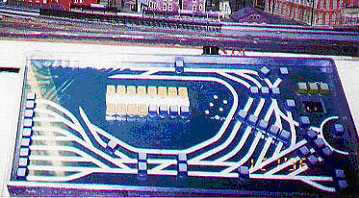
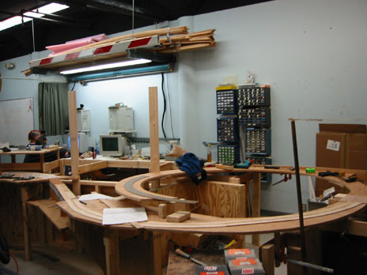

|
|
The Tech Model Railroad Club (TMRC) was formed in 1946, and within a year had obtained space in MIT's Building 20, a "temporary building" built for radar development during World War II.
Having space in a temporary building had the advantage that no one really cared what you did there, including altering the wiring or modifying the walls. However, having such space also had a downside, as MIT frequently threatened to tear the building down, "sometime within the next few years." These threats finally became reality in 1997.
The TMRC layout was never very scenic. This being MIT, more efforts were focused on control systems than on scenery.
Connecting power to track sections via hand-operated switches was far too simple and conventional for TMRC. Members wanted automation, and the way to get it at that time was to use relay-operated switching systems similar to those use by the Bell Telephone Company. For that, TMRC was in luck. The Club's faculty advisor, EE professor Carlton E. Tucker, had a life-long interest in telephony, taught courses in that field, and had many friends in the industry through whom surplus telephone equipment came to TMRC in abundance. Over the course of time, TMRC members built at least two major control systems that utilized telephone technology to control the layout, the last being System 2, which was decommissioned in 2002. In the photo, the train in the background gives some idea of the size of the switching equipment.
While TMRC members have come from a wide variety of course backgrounds, most have been electrical engineers. Since layout control posed interesting problems in switching theory and logical design, TMRC members had an early interest in computers. This was further enhanced by close relationships between TMRC and the Artificial Intelligence Laboratory, and between TMRC and Digital Equipment Corporation (DEC), a computer manufacturer that at the time was second only to IBM.
Both DEC and MIT's Lincoln Laboratory contributed early computers to MIT. Unlike the large IBM mainframes of the era, which were basically off-limits to students, the DEC and Lincoln machines were available for student experimentation. It wasn't long before a TMRC member used the DEC machine to invent the first video game, Spacewar.
The ingenuity of TMRC members in manipulating the MIT telephone system, the MIT lock system, and MIT in general, became the stuff of legend with the 1984 publication of Hackers, by Steven Levy. The first chapter was entitled, The Tech Model Railroad Club, and was followed by a few chapters on the some of the Club's more interesting members. Famous West Coast luminaries such as Bill Gates, Steve Jobs, and Stephen Wozniak were covered in later chapters.
In 1993, Fred Hapgood wrote Up the Infinite Corridor. True to its subtitle, MIT and the Technical Imagination, this book was primarily about the psychology and process of engineering. However, TMRC again merited an entire chapter. A quote of possible interest was, "TMRC was a combination fraternal organization, neighborhood bar, wilderness hut, and safe house, an oasis of communitas in a culture that otherwise held its members up to the most scary sort of individual inspection." A brief description of the problems of progressive cab control followed, along credit for the TMRC system being the first to implement it. The chapter concluded with a discussion of role of the DEC and Lincoln Lab computers in TMRC's computer hacking history.
Experiments with MIT's DEC and Lincoln machines, and employment at DEC and at the AI Lab were not, of course, the limit of TMRC's involvement with computers. Early DEC computers soon found their way into TMRC. They were used to control routes in the freight yard and to throw switches on the main layout. TMRC was probably one of the first student activities to make use of computers. However, in each application, cost and electrical component limits dictated that elaborate relay interfaces connect each computer to the layout.
This photo shows TMRC's "program development PDP-11." Somewhat smaller machines were used under the layout to control the freight yard and assist in throwing switches.
As mentioned in the previous section, the prospect of having to move was a constant threat throughout the Club's early history. When that day finally came, the event provided both opportunities and problems. The opportunities centered about improvements to the control system and track switches, while the problems centered about scenery.
While the relay-operated control system was successfully moved to the new location in N52, making any additions to it would have been very costly in dollars, effort, and space.
 To solve that problem, we designed a new electronic control system that is much more compact. While the relay system shown above controlled 50 blocks, each of the electronic cards controls 8 blocks. Thus, the four cards shown control 32 blocks.
To solve that problem, we designed a new electronic control system that is much more compact. While the relay system shown above controlled 50 blocks, each of the electronic cards controls 8 blocks. Thus, the four cards shown control 32 blocks.

Since the former system did not have enough capacity to provide block control in the yards, each of three major yards had their own control systems, each different, and each requiring an elaborate, customized control panel.
While the freight yard panel shown in the photo was easy to use and elegant in appearance, its interface to the layout was roughly equivalent to an additional one-fifth of the relay control system. Substantial knowledge and documentation were required to service this panel, the other panels, and their interfaces.
Since the new control system is easily and cheaply expandable, it controls all mainline and yard blocks, and the control panels are simple PCs. All interfaces between components in this system are industry standard, so that parts (such as the PCs) can be replaced when technological progress dictates.
The track switch (turnout) mechanisms on the previous layout were all handcrafted and difficult to adjust. In the new layout, high quality off-the-shelf switch machines are used instead. Further, a computer controls these mechanisms via standardized interface cards. The following pictures show the track switches viewed from the top and bottom, plus one of the standardized interface cards, each of which controls up to eight switches.
The scenery at TMRC, while modest, was the result of many years of exacting work, and it was desirable to take as much as possible to the new location.
The passenger yard (P-yard) was brought over from the old layout, lengthened by 18 inches, and had its entrance and exit tracks revised. In addition, many new city buildings were added to give it the metropolitan look appropriate to our major city terminal.
An exact scale model of MIT's Green Building was added. This provides a suitable window array for people to play Tetris when the lights and controller have been completed.
In addition to the new city buildings, the "Gifford City Loop," a collection of buildings based on Boston prototypes and surrounded by an operating trolley loop, was brought over from the old layout to the new.
The roundhouse and microprocessor-operated turntable were also brought over from the old layout.
There's still plenty of opportunity for track-laying and scenery construction, however...
To be continued (hopefully by YOU!).
|
Tech Model Railroad Club of
MIT Room N52-118 265 Massachusetts Avenue Cambridge, MA 02139
|
+1 617 253-3269 Email: tmrc-web@mit.edu |